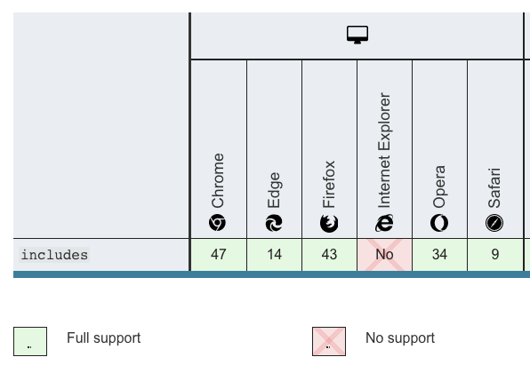

Symbol和Array.prototype.includes不兼容IE，有babel就可以，他的原理是什么
在mdn上可以查相关API的兼容性,可以看到Symbol和Array.prototype.includes是不支持IE的，但我们在vue-cli的项目中，发现使用了这些api，在IE下也可以运行，这是为什么呢？
主要是安装了babel，babel有进行转换，当IE不支持某个方法时，会使用替代的pollyfill，那它是怎么打包进项目的？

什么是babel？
为什么会有babel，babel出现的原因是JS的一些很好的新特性在一些低浏览器版本或者IE下无法使用。为了用最新的JS语法特性写的代码在某些不兼容的环境下也可以正常运行，babel应运而生。
Babel is a JavaScript compiler，Babel is a toolchain that is mainly used to convert ECMAScript 2015+ code into a backwards compatible version of JavaScript in current and older browsers or environments. Here are the main things Babel can do for you:
babel是一个js编译器，他是一个工具链(toolchain)，它主要用于将 ES6(ES2015)+ 的代码转换为在低版本浏览器或执行环境可以跑起来的代码。他主要做了以下事情：
- Transform syntax(语法转换)
- Polyfill features that are missing in your target environment (through @babel/polyfill) (当浏览器会运行环境不支持某些API时，通过使用@babel/polyfill补充上对应的API实现内容(polyfill features))
- Source coude transformations（codemods） 源码转换
- And more！（check out these videos for inspiration）（更多，查看这些视频以获取灵感）
// Babel Input: ES2015 arrow function
[1, 2, 3].map((n) => n + 1);
// Babel Output: ES5 equivalent
[1, 2, 3].map(function(n) {
return n + 1;
});关于@babel/polyfill与core-js
一般polyfill只会提供es2015+相关的内容，且当某些新特性还没到 Stage 4 proposals(第4阶段的提议)之前，是不支持的
As of Babel 7.4.0, this package has been deprecated in favor of directly including core-js/stable (to polyfill ECMAScript features) and regenerator-runtime/runtime (needed to use transpiled generator functions):
在 Babel 7.4.0 中，@babel/polyfill这个包被废弃了，现在由 core-js/stable 来polyfill features
import "core-js/stable";
import "regenerator-runtime/runtime";我们在core-js的源码中找找 symbol 和includes的实现，一般源码目录在 core-js/internals 目录下，下面是 include polyfill的实现
// /core-js/internals/array-includes.js
var toIndexedObject = require('../internals/to-indexed-object');
var toLength = require('../internals/to-length');
var toAbsoluteIndex = require('../internals/to-absolute-index');
// `Array.prototype.{ indexOf, includes }` methods implementation
var createMethod = function (IS_INCLUDES) {
return function ($this, el, fromIndex) {
var O = toIndexedObject($this);
var length = toLength(O.length);
var index = toAbsoluteIndex(fromIndex, length);
var value;
// Array#includes uses SameValueZero equality algorithm
// eslint-disable-next-line no-self-compare
if (IS_INCLUDES && el != el) while (length > index) {
value = O[index++];
// eslint-disable-next-line no-self-compare
if (value != value) return true; // ??????
// Array#indexOf ignores holes, Array#includes - not
} else for (;length > index; index++) {
if ((IS_INCLUDES || index in O) && O[index] === el) return IS_INCLUDES || index || 0;
} return !IS_INCLUDES && -1;
};
};
module.exports = {
// `Array.prototype.includes` method
// https://tc39.github.io/ecma262/#sec-array.prototype.includes
includes: createMethod(true),
// `Array.prototype.indexOf` method
// https://tc39.github.io/ecma262/#sec-array.prototype.indexof
indexOf: createMethod(false)
};tc39官网介绍：When the includes method is called, the following steps are taken:
// https://tc39.github.io/ecma262/#sec-array.prototype.includes
1. Let O be ? ToObject(this value).
2. Let len be ? LengthOfArrayLike(O).
3. If len is 0, return false.
4. Let n be ? ToInteger(fromIndex).
5. Assert: If fromIndex is undefined, then n is 0.
6. If n ≥ 0, then
Let k be n.
Else,
Let k be len + n.
If k < 0, set k to 0.
8. Repeat, while k < len,
Let elementK be the result of ? Get(O, ! ToString(k)).
If SameValueZero(searchElement, elementK) is true, return true.
Set k to k + 1.
9. Return false.关于 sameValueZero算法，参见 samevaluezero tc39
symbol polyfill实现
// `Symbol.prototype.description` getter
// https://tc39.github.io/ecma262/#sec-symbol.prototype.description
// /core-js/modules/es.symbol.description.js
var NativeSymbol = global.Symbol;
if (DESCRIPTORS && typeof NativeSymbol == 'function' && (!('description' in NativeSymbol.prototype) ||
// Safari 12 bug
NativeSymbol().description !== undefined
)) {
var EmptyStringDescriptionStore = {};
// wrap Symbol constructor for correct work with undefined description
var SymbolWrapper = function Symbol() {
var description = arguments.length < 1 || arguments[0] === undefined ? undefined : String(arguments[0]);
var result = this instanceof SymbolWrapper
? new NativeSymbol(description)
// in Edge 13, String(Symbol(undefined)) === 'Symbol(undefined)'
: description === undefined ? NativeSymbol() : NativeSymbol(description);
if (description === '') EmptyStringDescriptionStore[result] = true;
return result;
};
copyConstructorProperties(SymbolWrapper, NativeSymbol);
var symbolPrototype = SymbolWrapper.prototype = NativeSymbol.prototype;
symbolPrototype.constructor = SymbolWrapper;
var symbolToString = symbolPrototype.toString;
var native = String(NativeSymbol('test')) == 'Symbol(test)';
var regexp = /^Symbol\((.*)\)[^)]+$/;
defineProperty(symbolPrototype, 'description', {
configurable: true,
get: function description() {
var symbol = isObject(this) ? this.valueOf() : this;
var string = symbolToString.call(symbol);
if (has(EmptyStringDescriptionStore, symbol)) return '';
var desc = native ? string.slice(7, -1) : string.replace(regexp, '$1');
return desc === '' ? undefined : desc;
}
});babel是怎么自动打包进vue-cli项目里的
在babel github官方仓库里面有一个 babel-loader 项目，主要是Babel loader for webpack，另外vue-cli的package.json里也引入了 @vue/cli-plugin-babel，后面有时间再深入研究